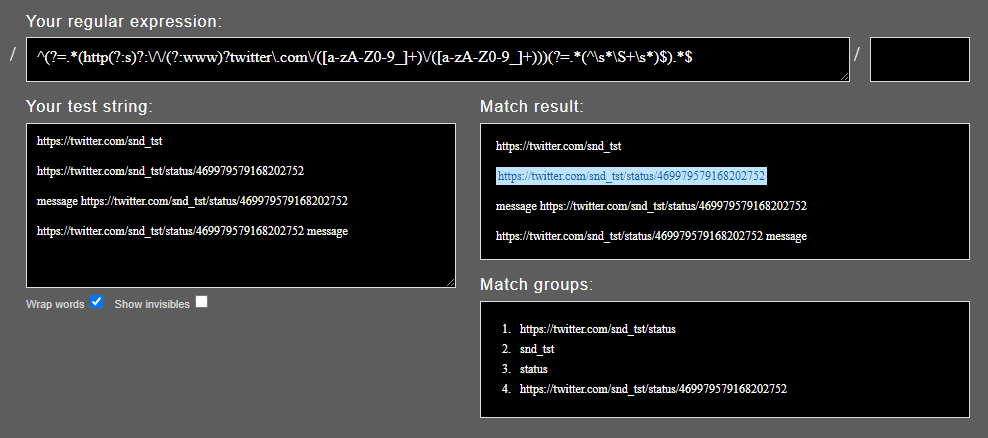

# Initialize with a Project Key
deta = Deta(os.environ["PROJECT_KEY"])Link Ninja
A serverless Telegram bot that replaces twitter links with fxtwitter.com, nitter.net or your own instances of either 🐱👤
This has two components: the bot itself, and a database. I’ll start with the database since it’ll have to be defined first to be used by the bot.
Nearly all imports used by functions are imported first (outside the function) since they will be used very frequently.
Database
This will store various user info and bot settings and will be used internally by our bot.
I’m using Base by deta.sh, it’s a serverless NoSQL database with unlimited storage. Very convenient!
Note: if you want to store data differently, modify the database functions
What data will be stored?
- Dates are UTC in the format
dd-mm-yyyy hh:00, in code this is%d-%m-%Y %H:00(see Python strftime cheatsheet for more formats). keyis required and needs to be unique; keys are automatically generated by Deta if not provided.chat_idis a unique value given by Telegram and will be used as the key in settings since eachchat_idneeds to be entered only once.- ULIDs (Universally Unique Lexicographically Sortable Identifiers) are used as keys everywhere else and order is is preserved here since data in Bases are ordered by
key.
settings
Bot settings for each chat
[{'key': '1111',
'signature': False,
'twitter': 'fxtwitter.com'}]total-users
Everyone who pressed /start in a private chat with our bot
[{'date': '02-10-2022 17:00',
'key': '01BJQMF54D093DXEAWZ6JYRPAQ',
'private chat id': 1111,
'user id': 1111}]current-users
total-users minus people who stopped/blocked our bot
[{'date': '02-10-2022 17:00',
'key': '01BJQMF54D093DXEAWZ6JYRPAQ',
'private chat id': 1111,
'user id': 1111}]message-stats
Count of how many links were replaced
[{'date': '02-10-2022 17:00',
'key': '01BJQMF54D093DXEAWZ6JYRPAQ',
'chat id': 1111,
'links replaced': 69}]total-groups
All groups our bot was added to
[{'date': '02-10-2022 17:00',
'key': '01BJQMF54D093DXEAWZ6JYRPAQ',
'group chat id': 2222}]current-groups
Current groups our bot is in
[{'date': '02-10-2022 17:00',
'key': '01BJQMF54D093DXEAWZ6JYRPAQ',
'group chat id': 2222}]admins
Current list of users added as admins
[{'date': '02-10-2022 17:00',
'key': '01BJQMF54D093DXEAWZ6JYRPAQ',
'user id': 1111}]Get a Project Key from Deta
To get started, make an account on or log into deta.sh, create a new project and save your Project Key as an evironment variable PROJECT_KEY.
See their docs if you need any help: https://docs.deta.sh/docs/base/about
Functions
Handy functions our bot talk will use to talk to its database.
Settings
For this the key in our database will have to be unique so we’ll be using chat IDs
def update_setting_signature(chat_id, signature = True):
"""
create or update setting: signature
"""
# connect to or create database.
db = deta.Base("settings")
# keys have to be unique so it's the chat_id
# unix timestamps could've been used as keys but then chat_id will be re-added each time signature is updated
# since the items are fetched by chat_ids and not keys
settings = db.update(
{
"signature": signature
},
key = str(chat_id)
)
print(f"signature updated")update_setting_signature
update_setting_signature (chat_id, signature=True)
create or update setting: signature
def update_setting_domain(chat_id, domain = "fxtwitter."):
"""
create or update setting: domain
"""
db = deta.Base("settings")
settings = db.update(
{
"twitter": domain
},
key = str(chat_id)
)
print(f"twitter domain updated")update_setting_domain
update_setting_domain (chat_id, domain='fxtwitter.')
create or update setting: domain
def default_settings(chat_id, signature = True, domain = "fxtwitter.com"):
"set default settings"
db = deta.Base("settings")
settings = db.put(
{
"signature": signature,
"twitter": domain,
"key": str(chat_id)
}
)
print(f"settings set to default: {settings}")default_settings
default_settings (chat_id, signature=True, domain='fxtwitter.com')
set default settings
def get_settings(chat_id):
"""
get settings for a chat
usage:
`get_settings["signature"]`
`get_settings["domain"]`
"""
db = deta.Base("settings")
settings = db.fetch({"key": str(chat_id)}).items
if bool(settings):
print("Settings exist")
return settings[0]
else: # if list is empty a record for the user hasn't been created
print("chat settings doesn't exist; creating new/default settings for this chat")
# set default settings - signature: on, domain: fxtwitter
default_settings(chat_id=chat_id)
settings = db.fetch({"key": str(chat_id)}).items
return settings[0]get_settings
get_settings (chat_id)
get settings for a chat
usage: get_settings["signature"] get_settings["domain"]
def delete_setting(chat_id):
"""
deletes a user from a database if they exist in it
"""
db = deta.Base("settings")
key = str(chat_id)
delete = db.get(key)
# if exists, delete
if bool(delete):
db.delete(key)
print(f"settings of {chat_id} deleted")
else:
print(f"settings of user {chat_id} don't exist")delete_setting
delete_setting (chat_id)
deletes a user from a database if they exist in it
General
Makes handling info from the database more convenient
def fetch_all(database_name):
"""
fetches the whole database
this is from deta's docs: https://docs.deta.sh/docs/base/sdk/#fetch-all-items-1
"""
db = deta.Base(database_name)
res = db.fetch()
all_items = res.items
# fetch until last is 'None'
while res.last:
res = db.fetch(last=res.last)
all_items += res.items
return all_itemsfetch_all
fetch_all (database_name)
fetches the whole database
this is from deta’s docs: https://docs.deta.sh/docs/base/sdk/#fetch-all-items-1
def database_to_dataframe(database_name):
"""
fetches the whole database and converts it to a pandas dataframe
"""
import pandas as pd
all_items = fetch_all(database_name=database_name)
return pd.DataFrame.from_dict(all_items)database_to_dataframe
database_to_dataframe (database_name)
fetches the whole database and converts it to a pandas dataframe
Users
Unix timespams will be used as keys so order can be preserved.
def save_user(chat_id, user_id, database_name):
"""
save private chat ids to a database
"""
db = deta.Base(database_name)
# check if user exists
check = db.fetch({"private chat id": chat_id, "user id": user_id}).items
if bool(check):
print(f"user already exists in {database_name}")
else:
# unix timestamps used as keys
user = db.put(
{
"private chat id": chat_id,
"user id": user_id,
"date": datetime.now().strftime("%d-%m-%Y %H:00"),
"key": ulid.new().str
}
)
print(f"added to {database_name}: {user}")save_user
save_user (chat_id, user_id, database_name)
save private chat ids to a database
def delete_user(chat_id, user_id, database_name):
"""
deletes a user from a database if they exist in it
"""
db = deta.Base(database_name)
delete = db.fetch(
{
"private chat id": chat_id,
"user id": user_id
}
).items
# if exists, delete
if bool(delete):
key = delete[0]["key"]
db.delete(key)
print(f"user {user_id} deleted from {database_name}")
else:
print(f"user {user_id} not in {database_name}")delete_user
delete_user (chat_id, user_id, database_name)
deletes a user from a database if they exist in it
Blocked users are deleted from current-users. If you want to maintain a separate blocked database, use the commented out code at the end of update_users()
def update_users(chat_id, user_id, blocked=False):
"""
save private chat ids to "total users" and "current users"
total users: all users who have started the bot
blocked: users who have blocked the bot (NOT done by default)
current users: total users - blocked
"""
if blocked == False:
databases = ["total-users", "current-users"]
for database in databases:
save_user(chat_id=chat_id, user_id=user_id, database_name=database)
else: # delete blocked user from current-users
delete_user(chat_id=chat_id, user_id=user_id, database_name="current-users")
delete_setting(chat_id=chat_id)
# dealing with blocked users with a separate "blocked" database
# else:
# save_user(chat_id=chat_id, user_id=user_id, database_name="blocked")
# # blocked = deta.Base("blocked")
# current = deta.Base("current-users")
# # get all items from blocked list
# all_blocked = fetch_all(database_name="blocked")
# # search for blocked users in current users
# remove_from_current = current.fetch(all_blocked).items
# # get the keys for items to remove from current
# for item in remove_from_current:
# # and delete
# current.delete(item["key"])
# print(f"{item['user id']} removed from current users")update_users
update_users (chat_id, user_id, blocked=False)
save private chat ids to “total users” and “current users”
total users: all users who have started the bot blocked: users who have blocked the bot (NOT done by default) current users: total users - blocked
Admins
def save_admin(user_id, database_name):
"""
save admin user ids to a database
"""
# connect to or create database.
db = deta.Base(database_name)
# check if user exists
check = db.fetch({"user id": user_id}).items
if bool(check):
print(f"user already exists in {database_name}")
else:
# unix timestamps used as keys
user = db.put(
{
"user id": user_id,
"date": datetime.now().strftime("%d-%m-%Y %H:00"),
"key": ulid.new().str
}
)
print(f"added to {database_name}: {user}")save_admin
save_admin (user_id, database_name)
save admin user ids to a database
def delete_admin(user_id, database_name):
"""
deletes an admin from a database if they exist in it
"""
db = deta.Base(database_name)
delete = db.fetch(
{
"user id": user_id
}
).items
# if exists, delete
if bool(delete):
key = delete[0]["key"]
db.delete(key)
print(f"admin {user_id} deleted from {database_name}")
else:
print(f"admin {user_id} not in {database_name}")delete_admin
delete_admin (user_id, database_name)
deletes an admin from a database if they exist in it
def update_admins(user_id, action="add"):
"add or remove users from the admin database"
if action=="add":
return save_admin(user_id=user_id, database_name="admins")
elif action=="remove":
return delete_admin(user_id=user_id, database_name="admins")
else:
print("action needs to be either 'add' or 'remove'")update_admins
update_admins (user_id, action='add')
add or remove users from the admin database
Messages
def update_message_count(chat_id):
"""
save and update messages/links seen
"""
# connect to or create database.
db = deta.Base("message-stats")
# check if todays date exists in records
# incremenet message count if yes
# chat id used as keys
# unix timestamps used as keys
check = db.fetch(
{
"chat id": chat_id,
"date": datetime.now().strftime("%d-%m-%Y %H:00")
}
).items
if bool(check):
# get key from existing record
key = check[0]["key"]
# use the same key to update an existing record
messages = db.update(
{
"links replaced": db.util.increment(1)
},
key = key
)
print(f"message count updated for chat: {chat_id} at key: {key}")
else: # create record
messages = db.put(
{
"date": datetime.now().strftime("%d-%m-%Y %H:00"),
"chat id": chat_id,
"links replaced": int(1),
"key": ulid.new().str
}
)
print(f"record created: {messages}")update_message_count
update_message_count (chat_id)
save and update messages/links seen
Group
Similar functions to Users but for groups.
def save_group(chat_id, database_name):
"""
save group chat ids to a database
"""
# connect to or create database.
db = deta.Base(database_name)
# check if user exists
check = db.fetch({"group chat id": chat_id}).items
if bool(check):
print(f"user already exists in {database_name}")
else:
# unix timestamps used as keys
group = db.put(
{
"group chat id": chat_id,
"date": datetime.now().strftime("%d-%m-%Y %H:00"),
"key": ulid.new().str
}
)
print(f"added to {database_name}: {group}")save_group
save_group (chat_id, database_name)
save group chat ids to a database
def delete_group(chat_id, database_name):
"""
deletes a group from a database if it exists in it
"""
db = deta.Base(database_name)
delete = db.fetch(
{
"group chat id": chat_id
}
).items
# if exists, delete
if bool(delete):
key = delete[0]["key"]
db.delete(key)
print(f"group {chat_id} deleted from {database_name}")
else:
print(f"group {chat_id} not in {database_name}")delete_group
delete_group (chat_id, database_name)
deletes a group from a database if it exists in it
def update_groups(chat_id, removed=False):
"""
save group chat ids to "total groups" and "current groups"
total groups: all users who have started the bot
current groups: total users - blocked
"""
if removed == False:
databases = ["total-groups", "current-groups"]
for database in databases:
save_group(chat_id=chat_id, database_name=database)
else: # delete blocked user from current-groups
delete_group(chat_id=chat_id, database_name="current-groups")
delete_setting(chat_id=chat_id)update_groups
update_groups (chat_id, removed=False)
save group chat ids to “total groups” and “current groups”
total groups: all users who have started the bot current groups: total users - blocked
Statistics
def get_message_count(chat_id):
"""
gets stats (number of links replaced) for a given chat id
"""
import pandas as pd
# connect to or create database.
db = deta.Base("message-stats")
# get data for a sepcific chat id
data = db.fetch(
{
"chat id": chat_id
}
).items
# load into pandas and group by the chat id column
df = pd.DataFrame.from_dict(data)
try:
df = df.groupby('chat id', as_index=False).sum()
messages = df['links replaced'][0]
except: # if there's 0 messages for the chat
messages = 0
return messagesget_message_count
get_message_count (chat_id)
gets stats (number of links replaced) for a given chat id
def all_stats():
"""
get stats on number of users, chats and messages
it returns five variables: users, groups, messages, total_users, total_groups
"""
users = database_to_dataframe("current-users")\
["private chat id"].count()
try:
groups = database_to_dataframe("current-groups")\
["group chat id"].count()
except:
groups = 0
messages = database_to_dataframe("message-stats")\
["links replaced"].sum()
total_users = database_to_dataframe("total-users")\
["private chat id"].count()
total_groups = database_to_dataframe("total-groups")\
["group chat id"].count()
return users, groups, messages, total_users, total_groupsall_stats
all_stats ()
get stats on number of users, chats and messages
it returns five variables: users, groups, messages, total_users, total_groups
def admin_stats():
"""
shows number of admins
"""
admins = database_to_dataframe("admins")\
["user id"].count()
return adminsadmin_stats
admin_stats ()
shows number of admins
The bot
Our bot will do something when it sees a command like /start or notices a link that needs to be sneakily [or not so sneakily] replaced
- Built using https://github.com/eternnoir/pyTelegramBotAPI
Create a Telegram bot
Chat with https://t.me/BotFather to create a new Telegram bot and save the API token as an environment variable BOT_TOKEN.
Instantiate our bot! 🤖
bot = telebot.TeleBot(os.environ["BOT_TOKEN"])/start
- Sends a welcome message; only avilable in a private chat.
- Updates our database:
- Creates a new user entry in
total-usersandcurrent-usersif it doesn’t exist. - Default: if someone is restarting our bot after blocking, they’ll be added back to
current-users. - Optional:
blockedis updated if our bot is restarted. See the commented outdelete_user().
- Creates a new user entry in
@bot.message_handler(commands=['start'], chat_types=['private'])
def send_welcome(message):
"send a message when `/start` is sent in a private chat"
# delete_user(chat_id=message.chat.id, user_id=message.from_user.id, database="blocked") # use only for having a separate "blocked" database
update_users(chat_id=message.chat.id, user_id=message.from_user.id, blocked=False)
default_settings(chat_id=message.chat.id, signature=False)
text="Welcome to Link Ninja! \n\n" \
"This bot will replace all Twitter links with fxtwitter.com by default. \n" \
"You can change this to nitter.net or a custom domain. \n\n" \
"Use /help to see how it works."
bot.reply_to(message, text)send_welcome
send_welcome (message)
send a message when /start is sent in a private chat
Settings
Signature
/signature onoroffto show the original link along with who sent itDomain
/domain {domain.tld}to change the domain from the default fxtwitter.com
A message with a defined /{command} will be heard by our bot. To know what settings to change, our bot will accept messages in the format /{setting name} {setting update}.
For example /signature on or /domain nitter.net.
The setting will be parsed from the message like this:
message = "/signature on"Whitespace is removed first
message.replace(" ", "")'/signatureon'Then split at the command
message.replace(" ", "").split('/signature')['', 'on']And finally, the setting itself is selected
message.replace(" ", "").split('/signature')[1]'on'Only admins should be able to change settings in a group chat, so lets make a function for that.
It will return True if the user is an admin, owner or it’s a private chat.
def is_admin(chat_id, user_id):
"""
check whether a user is an admin
works in both private and groups chats
"""
if bot.get_chat_member(chat_id, user_id).status in ['creator', 'administrator']:
admin = True
else:
admin = False
if bot.get_chat(chat_id).type == "private" or admin == True:
return True
else:
return Falseis_admin
is_admin (chat_id, user_id)
check whether a user is an admin
works in both private and groups chats
@bot.message_handler(commands=['signature'])
def signature_setting(message):
"changes `/signature` setting"
if is_admin(chat_id=message.chat.id, user_id=message.from_user.id):
signature = message.text.replace(" ", "").split('/signature')[1]
if signature == 'on':
update_setting_signature(chat_id=message.chat.id, signature=True)
bot.reply_to(message, "Signatures turned on")
elif signature == 'off':
update_setting_signature(chat_id=message.chat.id, signature=False)
bot.reply_to(message, "Signatures turned off")
else:
bot.reply_to(message, 'Use "/signature on" or "/signature off"')
else:
bot.reply_to(message, "Beg your superior admin to change this setting")signature_setting
signature_setting (message)
changes /signature setting
@bot.message_handler(commands=['domain'])
def domain_setting(message):
"changes `/domain` setting"
if is_admin(chat_id=message.chat.id, user_id=message.from_user.id):
custom_domain = message.text.replace(" ", "").split('/domain')[1]
if custom_domain == 'reset':
update_setting_domain(chat_id=message.chat.id, domain="fxtwitter.com")
bot.reply_to(message, "Reset to fxtwitter.com")
elif validators.domain(custom_domain):
update_setting_domain(chat_id=message.chat.id, domain=custom_domain)
bot.reply_to(message, f"Custom domain set to {custom_domain}")
else:
bot.reply_to(message, 'Use the format "/domain nitter.net" or reset with "/domain reset"')
else:
bot.reply_to(message, "Beg your superior admin to change this setting")domain_setting
domain_setting (message)
changes /domain setting
Replacing twitter links
What will this do? - Detect twitter links - Send a new message with the domain replaced - New message will have the original link and sender name (default, can be turned off) - Deletes the original message that had the link
How will it find links? - Regex
Criteria: - Any twitter link that isn’t a profile - Messages that only contain links i.e. no whitespace
Parsing links from messages
Done with urlparse which is part of python. Here’s an example:
from urllib.parse import urlparseurl = 'https://twitter.com/MKBHD/status/1569801859325431808?s=19'
parse = urlparse(url)
f"{parse.scheme}://fx{parse.netloc}{parse.path}"'https://fxtwitter.com/MKBHD/status/1569801859325431808'Here’s a function that will replace the domain with the one specified in our settings databse:
def replace_link(text, chat_id):
"check chat settings and replace the domain in URLs"
from urllib.parse import urlparse
parse = urlparse(text)
custom_domain = get_settings(chat_id)["twitter"]
return f"{parse.scheme}://{custom_domain}{parse.path}"replace_link
replace_link (text, chat_id)
check chat settings and replace the domain in URLs
Finding messages Twitter links
Making the regular expresion:
- Get twitter links
- Regex to validate a twitter url modified to get only links to tweets instead of profiles.
- Done by selecting for https://twitter.com/{profile}/status.
- Get messages that only have links
- Done by filtering for twitter links + no whitespace
- What is the regular expression for matching that contains no white space in between text? modified to get all messages without whitespace.
- Combine both
- Using the pattern
/^(?=^abc)(?=.*xyz$)(?=.*123)(?=^(?:(?!456).)*$).*$/from Combine Regexp?
Final expression used by our bot:
^(?=.*(http(?:s)?:\/\/(?:www)?twitter\.com\/([a-zA-Z0-9_]+)\/([a-zA-Z0-9_]+)))(?=.*(^\s*\S+\s*)$).*$- Available here: https://rubular.com/r/pJRmWeFvKk

@bot.message_handler(regexp="^(?=.*(http(?:s)?:\/\/(?:www)?twitter\.com\/([a-zA-Z0-9_]+)\/([a-zA-Z0-9_]+)))(?=.*(^\s*\S+\s*)$).*$")
def send_new_link(message):
"""
- replaces twitter links with a domain specified in settings using `replace_link()`
- sends a new message with the updated link
- deletes the original link unless it's a private chat
"""
# if signature: off
if get_settings(chat_id=message.chat.id)["signature"] == False:
user = None
else:
# check if username has been set so they can be tagged/mentioned
# if no username, mention with first and last name
if message.from_user.username is None:
# all users will have a first name
# check if last name exists
if message.from_user.last_name:
name = f"{message.from_user.first_name} {message.from_user.last_name}"
else:
name = message.from_user.first_name
user = f"<a href='tg://user?id={message.from_user.id}'>{name}</a>"
# if username exists, use that
elif message.from_user.username:
user = f"@{message.from_user.username}"
# if it's a channel/group with a username, use that
elif message.sender_chat.username:
user = f"@{message.sender_chat.username}"
# or use the channel/group title
elif message.sender_chat.title:
user = f"<b>{message.sender_chat.title}</b>"
else:
user = None
# message to send along with the fxtweet/new link
ninja_link = replace_link(text=message.text, chat_id=message.chat.id)
if user is None:
text = f"{ninja_link}"
else:
text = f"{ninja_link}\n\n" \
f"<a href='{message.text}'>Tweet</a> sent by {user}"
bot.send_message(
message.chat.id,
parse_mode="HTML",
text=text
)
# if it's not a private chat, delete the original message/link
if message.chat.type != "private":
bot.delete_message(
chat_id=message.chat.id,
message_id=message.message_id
)
# update message count
update_message_count(chat_id=message.chat.id)send_new_link
send_new_link (message)
- replaces twitter links with a domain specified in settings using
replace_link() - sends a new message with the updated link
- deletes the original link unless it’s a private chat
Bot added or removed
When our bot is added to a group
What do we do? ~Celebrate! 🥳~ Update our group database.
What about for private chat? That’s done in send_welcome() when someone sends /start to our dear bot 🙂.
Got blocked? :(
Those losers need to get removed (from our database 😇).
@bot.my_chat_member_handler()
def added_or_blocked(message: telebot.types.ChatMemberUpdated):
"updates our database when added to a group"
new = message.new_chat_member
if new.status in ["member", "creator", "administrator"]:
if message.chat.type == "group":
update_groups(chat_id=message.chat.id, removed=False)
print(f"added to group: {message.chat.id}")
if new.status not in ["member", "creator", "administrator"] or new.status == "kicked":
if message.chat.type == "group":
update_groups(chat_id=message.chat.id, removed=True)
print(f"got removed from group: {message.chat.id}")
if message.chat.type == "private":
update_users(chat_id=message.chat.id, user_id=message.from_user.id, blocked=True)
print(f"got blocked in private chat: {message.chat.id}")added_or_blocked
added_or_blocked (message:telebot.types.ChatMemberUpdated)
updates our database when added to a group
/stats
Shows count of links replaced in chat chat the command is used.
@bot.message_handler(commands=['stats'])
def message_count(message):
"Show message count for the chat this command is used in"
stats = get_message_count(chat_id=message.chat.id)
text=f"{stats} links replaced by Link Ninja in this chat"
bot.reply_to(message, text)message_count
message_count (message)
Show message count for the chat this command is used in
/allstats
Shows total count of chats and messages
@bot.message_handler(commands=['allstats'])
def signature_setting(message):
"show all bot stats"
users, groups, messages, total_users, total_groups = all_stats()
text="<b>Link Ninja stats</b> \n\n" \
f"<i>All time</i> \n" \
f"Links replaced: {messages} \n" \
f"Users: {total_users} \n" \
f"Groups: {total_groups} \n\n" \
f"<i>Current</i> \n" \
f"Users: {users} \n" \
f"Groups: {groups} \n" \
bot.reply_to(message, text, parse_mode="HTML")signature_setting
signature_setting (message)
show all bot stats
Admin commands
These commands will only work for pre-approved users. The first user will be you!
Get your user ID with https://t.me/getmyid_bot and save it as an environment variable YOUR_USER_ID.
def is_bot_admin(user_id):
"checks if a user is an admin or creator of the bot"
try:
added_admins = list(database_to_dataframe("admins")["user id"])
except:
print("admin dataframe/database empty")
added_admins = []
if os.environ["YOUR_USER_ID"] == str(user_id):
print("creator used an admin command")
return True
elif user_id in added_admins:
print(f"{user_id} used an admin command")
return True
else:
print("some rando used an admin command")is_bot_admin
is_bot_admin (user_id)
checks if a user is an admin or creator of the bot
/admin {option}
Available options: - send Reply to a message with /admin send to private message all bot update_users. - delete (to do/enhancement - this doesn’t work yet) Reply to the message that was sent to delete it in the private chat of all users. - add Add other admins; forward a message to your private chat with the bot from the user you want to add as admin, then reply tthe forwarded message with /admin add. - remove Remove an admin that was added; works the same as add. - count Shows number of admins. - help Shows avilable commands and what they’re for.
@bot.message_handler(commands=['admin'], chat_types=['private'])
def admin(message):
"""
handles admin commands in private chat
avilable options:
* send - sends a message to all bot user in private chat
* add - add new admin
* remove - remove admin
* count - show current number of admins
* help - show avilable commands and what they're for
"""
if is_bot_admin(user_id=message.from_user.id):
admin = message.text.replace(" ", "").split('/admin')[1]
if admin == 'help':
text="<b>Link Ninja admin commands</b> \n\n" \
"Format: /admin {command} \n\n" \
"send - reply to a message with this to copy and send to all bot users in private chat \n" \
"add - add new admin \n" \
"remove - remove admin \n" \
"count - show current number of admins \n" \
"help - show avilable commands and what they're for" \
bot.reply_to(message, text, parse_mode="HTML")
elif admin == 'send':
forward_to = database_to_dataframe("current-users")
for chat_id in forward_to["private chat id"]:
bot.copy_message(chat_id=chat_id, from_chat_id=message.chat.id, message_id=message.reply_to_message.message_id)
# update_settings(chat_id=message.chat.id, signature=True)
bot.reply_to(message, f"message sent to {len(forward_to['private chat id'])} users")
# elif admin == 'delete':
# forward_to = database_to_dataframe("current-users")
# for chat_id in forward_to["private chat id"]:
# # note: this needs the message ID of every message sent which has to be saved to our database when `/admin send` is used
# # it will need to iterate through message IDs
# bot.delete_message(chat_id=chat_id, message_id=message.reply_to_message.message_id)
# bot.reply_to(message, f"message deleted from {len(forward_to['private chat id'])} chats")
elif admin == 'add':
update_admins(user_id=message.reply_to_message.forward_from.id, action="add")
admins = admin_stats()
bot.reply_to(message, f"admin added; there are now {admins+1} admins")
elif admin == 'remove':
update_admins(user_id=message.reply_to_message.forward_from.id, action="remove")
try:
admins = admin_stats()
except: # if all admins have been removed and dataframe is empty
admins = 0
bot.reply_to(message, f"admin removed; there are now {admins+1} admins")
elif admin == 'count':
try:
admins = admin_stats()
bot.reply_to(message, f"there are {admins+1} admins")
except: # if admins doesn't exist yet because no additional admins have been added
bot.reply_to(message, "there's no additional admins")
else:
bot.reply_to(message, "Available commands are: send, add, remove, count and help")
bot.send_message(message.chat.id, "Use `/admin help` to learn more", parse_mode="MarkdownV2")
else:
bot.reply_to(message, "Non admins get rekt. Send $1000 for forgiveness")admin
admin (message)
handles admin commands in private chat
avilable options: * send - sends a message to all bot user in private chat * add - add new admin * remove - remove admin * count - show current number of admins * help - show avilable commands and what they’re for
/help
Explans how the bot works and shows the available settings.
@bot.message_handler(commands=['help'], chat_types=['private'])
def admin(message):
"""
send help message in private chat
"""
text="<b>Link Ninja info</b> \n\n" \
"<b>What does it do?</b> \n" \
"- Replaces twitter.com links with fxtwitter.com. \n" \
"- You can change it to nitter.net or your own nitter domain. \n\n" \
"<b>How do you use it?</b> \n" \
"- Just send a link. Only messages containing just the link will be replaced. \n" \
"- @LinkNinjaBot needs to be added as an admin to work in groups. \n\n" \
"<b>Settings</b> \n" \
"Format: /setting {options} \n\n" \
"/signature {on/off} \n" \
"- <code>/signature on</code> sends the message with the replaced link, the original link and who it was sent by. \n" \
"- By default it's off in private chats and on in group chats. \n\n" \
"/domain {your domain/reset} \n" \
"- Choose the domain to replace twitter.com with. \n" \
"- <code>/domain reset</code> changes it back to fxtwitter.com." \
bot.reply_to(message, text, parse_mode="HTML")admin
admin (message)
send help message in private chat
How to run/deploy?
Note: it’ll be easier to create a separate bot for testing and deploying; if you create a webhook for a bot, polling won’t work untill the webhook is deleted
Webhooks
This is ideal for deployment since telegram can send updates to our server without us having to keep checking/polling for updates
To create a webhook, we’ll have to create a domain and register that with telegram. To do that, open this URL:
https://api.telegram.org/bot<bot_token>/setWebhook?url=<webhook_url>or optionally with a secret token (like a password):
https://api.telegram.org/bot<bot_token>/setWebhook?url=<webhook_url>&secret_token=<secret_token>You can see the status of your webhook with:
https://api.telegram.org/bot<bot_token>/getWebhookInfoAnd delete your webhooks with:
https://api.telegram.org/bot<bot_token>/deleteWebhookFor more info on webhooks:
https://core.telegram.org/bots/api#setwebhook
https://xabaras.medium.com/setting-your-telegram-bot-webhook-the-easy-way-c7577b2d6f72
We’ll be deploying with Deta becase it’s both free and convenient 😃
Note that they require the file to be named main.py
To make things easier, we’ll use the webhook functions from our bot library
Create a domain on Deta.sh and save that as an environment variable called DOMAIN. Follow this guide for a detailed walk through:
https://medium.com/@noufal.slm/create-your-own-telegram-bot-with-python-and-deta-sh-ef9aee7b93d5
An optional environment variable you can set is WEBHOOK_PASSWORD, which is an added bit of security.
# check if a webhook already exists
if bot.get_webhook_info().url != f'{os.environ["DOMAIN"]}/{os.environ["BOT_TOKEN"]}':
nest_asyncio.apply()
# https://pytba.readthedocs.io/en/latest/sync_version/index.html#telebot.TeleBot.set_webhook
bot.run_webhooks(
webhook_url=f'{os.environ["DOMAIN"]}/{os.environ["BOT_TOKEN"]}', # https://yourdomain.tld/bot_token
secret_token=os.environ["WEBHOOK_PASSWORD"], # remove if you don't want to set one
drop_pending_updates=True
)Polling
Use this for testing; much easier since it doesn’t require any set up!
If you’ve already created a webhook for a bot that you now want to use polling for, re-enable polling with:
https://api.telegram.org/bot<bot_token>/getUpdates# bot.infinity_polling(
# allowed_updates=telebot.util.update_types,
# skip_pending=True)